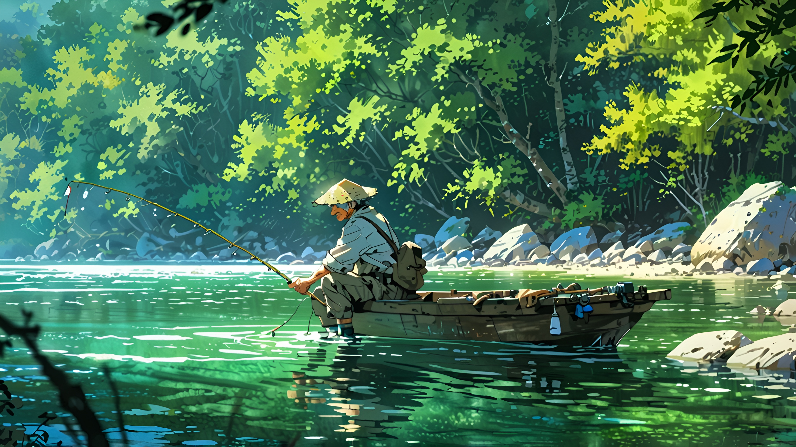

Tu compañero en el camino hacia un planeta más verde
Descubre más consejos ecológicos y cómo puedes hacer una diferencia.

Descubre más consejos ecológicos y cómo puedes hacer una diferencia.
Alineado con el ODS 13 "Accion por el clima" con este proyecto buscamos que cada persona tenga una manera de adquirir el conocimiento para llevar una vida mas ecologica, asimismo ayudando a reducir el impacto ambiental. Por lo cual desde la asistencia en informacion ambiental desde la vida cotidiana estimamos socavar el impacto de la contaminación
Learn more